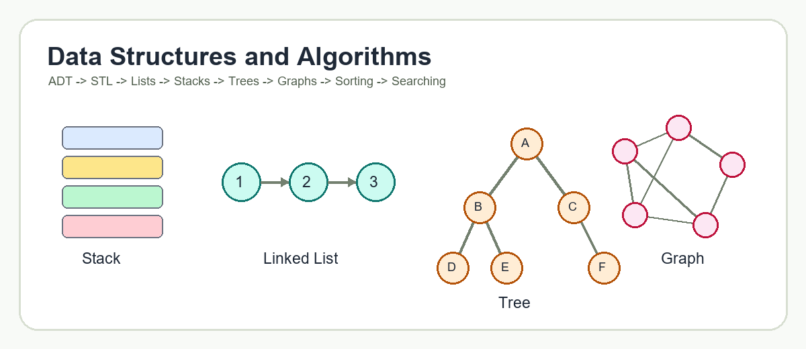

Learning Targets
- Understand:
- Data structures
- Abstract Data Types (ADTs)
- Standard Template Library (STL)
- Containers, iterators, and algorithms
- Vector/list mentions in STL context
CSEB3213 DSA Study Hub

Node *next means the node stores an address of another node.new Node() allocates memory dynamically.n->data accesses a member through a pointer.NULL marks no next node.#include <iostream>
using namespace std;
class MyClass {
struct Node {
int data;
Node *next;
};
Node *head;
public:
MyClass() {
head = NULL;
}
Node* createNode() {
Node *n = new Node();
cout << "Enter a number: ";
cin >> n->data;
n->next = NULL;
return n;
}
};
int main() {
MyClass record;
record.createNode();
return 0;
}vec.size() is O(1)push_back() in STL vector and STL list.begin() to end().vector<int> vec; means a vector storing integers.vec.size() returns the number of elements.vector<int>::iterator i declares an iterator.*i reads the value pointed to by the iterator.i++ moves to the next element.#include <iostream>
#include <vector>
using namespace std;
int main() {
vector<int> vec;
vec.push_back(10);
vec.push_back(20);
vec.push_back(30);
cout << "Size: " << vec.size() << endl; // O(1)
vector<int>::iterator i = vec.begin();
for (; i < vec.end(); i++) { // O(n)
cout << *i << " ";
}
return 0;
}size() is constant time because the STL stores the size as part of the vector.vec.size() is O(1) because the STL stores the vector size.int getVectorSize(const vector<int>& vec) {
return vec.size(); // O(1)
}vector<int>::iterator i = vec.begin();
for (; i < vec.end(); i++)
cout << *i;void printVector(const vector<int>& vec) {
for (auto i = vec.begin(); i < vec.end(); i++) {
cout << *i << " ";
}
}void printPairs(int arr[], int n) {
for (int i = 0; i < n; i++) {
for (int j = 0; j < n; j++) {
cout << arr[i] << "," << arr[j] << endl;
}
}
}for(int i = 0; i < n; i *= 2).i = 0 causes i to stay 0 forever.i = 1.void logLoop(int n) {
for (int i = 1; i < n; i *= 2) {
cout << i << " ";
}
}void nLogNLoop(int n) {
for (int i = 0; i < n; i++) {
for (int j = 1; j < n; j *= 2) {
cout << i << "," << j << endl;
}
}
}head stores the address of the first node.next = NULL.tail is optional.next pointer.Node *n = new Node(); creates a node.n->no = 6; stores data.n->next = NULL; marks no next node yet.class Node {
public:
int no;
Node *next;
};
Node* createNode(int value) {
Node *n = new Node();
n->no = value;
n->next = NULL;
return n;
}next to NULL.head == NULL, assign head = n.1. Create a new node.
2. Store the value.
3. Set n->next = NULL.
4. Check whether the list is empty.
5. If empty, set head = n.
void insertEmpty(Node *&head, int value) {
Node *n = createNode(value);
if (head == NULL) {
head = n;
}
}p to move to the last node.1. Create a new node.
2. If the list is empty, set head = n.
3. Otherwise, set p = head.
4. Move p while p->next != NULL.
5. Set p->next = n.
void insertEnd(Node *&head, int value) {
Node *n = createNode(value);
if (head == NULL) {
head = n;
return;
}
Node *p = head;
while (p->next != NULL) {
p = p->next;
}
p->next = n;
}push_back() in STL vector and STL list.1. Create a new node.
2. Set n->next = head.
3. Set head = n.
void insertBeginning(Node *&head, int value) {
Node *n = createNode(value);
n->next = head;
head = n;
}push_front() in STL list.p to one position before the insertion location.p to the new node.1. Create a new node.
2. Set p = head.
3. Move p until it is one node before the target position.
4. Set n->next = p->next.
5. Set p->next = n.
void insertAfterPosition(Node *head, int posBefore, int value) {
Node *n = createNode(value);
Node *p = head;
int i = 1;
while (i < posBefore && p != NULL) {
p = p->next;
i++;
}
if (p == NULL) return;
n->next = p->next;
p->next = n;
}void insertFirstWithTail(Node *&head, Node *&tail, int value) {
Node *n = createNode(value);
if (head == NULL) {
head = tail = n;
}
}void insertEndWithTail(Node *&head, Node *&tail, int value) {
Node *n = createNode(value);
if (head == NULL) {
head = tail = n;
return;
}
tail->next = n;
tail = n;
}free(n).new, use delete n in C++.1. If the list is empty, stop.
2. Set n = head.
3. Set head = head->next.
4. Delete n.
void deleteBeginning(Node *&head) {
if (head == NULL) return;
Node *n = head;
head = head->next;
delete n;
}n to the node before the targeted node.x at the target node.x.x.1. If list is empty or has no next node, handle separately.
2. Move n until n->next is the target.
3. Set x = n->next.
4. Set n->next = x->next.
5. Delete x.
void deleteValue(Node *&head, int target) {
if (head == NULL) return;
if (head->no == target) {
deleteBeginning(head);
return;
}
Node *n = head;
while (n->next != NULL && n->next->no != target) {
n = n->next;
}
if (n->next == NULL) return;
Node *x = n->next;
n->next = x->next;
delete x;
}next to NULL.1. If list is empty, stop.
2. If list has one node, delete it and set head = NULL.
3. Move n while n->next->next != NULL.
4. Set x = n->next.
5. Set n->next = NULL.
6. Delete x.
void deleteEnd(Node *&head) {
if (head == NULL) return;
if (head->next == NULL) {
delete head;
head = NULL;
return;
}
Node *n = head;
while (n->next->next != NULL) {
n = n->next;
}
Node *x = n->next;
n->next = NULL;
delete x;
}head and tail become NULL.void deleteBeginningWithTail(Node *&head, Node *&tail) {
if (head == NULL) return;
Node *n = head;
head = head->next;
delete n;
if (head == NULL) {
tail = NULL;
}
}void deleteEndWithTail(Node *&head, Node *&tail) {
if (head == NULL) return;
if (head == tail) {
delete head;
head = tail = NULL;
return;
}
Node *n = head;
while (n->next != tail) {
n = n->next;
}
delete tail;
tail = n;
tail->next = NULL;
}n = head.n == NULL.1. Set n = head.
2. While n != NULL, process n->no.
3. Move n = n->next.
void display(Node *head) {
Node *n = head;
while (n != NULL) {
cout << n->no << " ";
n = n->next;
}
}1. Start at head.
2. Traverse until value 7 is found.
3. Change it to 3.
4. Stop or continue depending on whether only one node should change.
void updateValue(Node *head, int oldValue, int newValue) {
Node *n = head;
while (n != NULL) {
if (n->no == oldValue) {
n->no = newValue;
return;
}
n = n->next;
}
}next pointer.prevcurrnextNodecurr->next = prev.1. Set prev = NULL.
2. Set curr = head.
3. Save next node as nextNode = curr->next.
4. Reverse current link: curr->next = prev.
5. Move prev = curr.
6. Move curr = nextNode.
7. Repeat until curr == NULL.
8. Set head = prev.
void reverseSingly(Node *&head) {
Node *prev = NULL;
Node *curr = head;
while (curr != NULL) {
Node *nextNode = curr->next;
curr->next = prev;
prev = curr;
curr = nextNode;
}
head = prev;
}prev linknext linkprev points to predecessor.next points to successor.Node *next, *prev; means two node pointers.NULL.class DNode {
public:
int no;
DNode *next;
DNode *prev;
};
DNode* createDNode(int value) {
DNode *n = new DNode();
n->no = value;
n->next = NULL;
n->prev = NULL;
return n;
}1. Create a new node.
2. Set n->next = NULL.
3. Set n->prev = NULL.
4. If head == NULL, set head = n.
void insertEmpty(DNode *&head, int value) {
DNode *n = createDNode(value);
if (head == NULL) {
head = n;
}
}1. Create a new node.
2. If empty, set head = n.
3. Move p to the last node.
4. Set p->next = n.
5. Set n->prev = p.
void insertEnd(DNode *&head, int value) {
DNode *n = createDNode(value);
if (head == NULL) {
head = n;
return;
}
DNode *p = head;
while (p->next != NULL) {
p = p->next;
}
p->next = n;
n->prev = p;
}1. Create a new node.
2. Set n->next = head.
3. Set head->prev = n.
4. Set head = n.
void insertBeginning(DNode *&head, int value) {
DNode *n = createDNode(value);
if (head != NULL) {
n->next = head;
head->prev = n;
}
head = n;
}p to one node before the insertion location.1. Create a new node.
2. Move p to one position before the insertion position.
3. Set n->next = p->next.
4. Set p->next->prev = n.
5. Set p->next = n.
6. Set n->prev = p.
void insertAfter(DNode *p, int value) {
if (p == NULL) return;
DNode *n = createDNode(value);
n->next = p->next;
n->prev = p;
if (p->next != NULL) {
p->next->prev = n;
}
p->next = n;
}prev to NULL.1. If empty, stop.
2. Set n = head.
3. Set head = head->next.
4. If new head exists, set head->prev = NULL.
5. Delete n.
void deleteBeginning(DNode *&head) {
if (head == NULL) return;
DNode *n = head;
head = head->next;
if (head != NULL) {
head->prev = NULL;
}
delete n;
}prev and next links.free(x) even though the pointer shown is n.1. Move n to the target node.
2. Link previous node to next node: n->prev->next = n->next.
3. Link next node to previous node: n->next->prev = n->prev.
4. Delete n.
void deleteMiddleNode(DNode *n) {
if (n == NULL) return;
if (n->prev == NULL || n->next == NULL) return;
n->prev->next = n->next;
n->next->prev = n->prev;
delete n;
}1. If empty, stop.
2. Move n until n->next == NULL.
3. Set n->prev->next = NULL.
4. Delete n.
void deleteEnd(DNode *&head) {
if (head == NULL) return;
if (head->next == NULL) {
delete head;
head = NULL;
return;
}
DNode *n = head;
while (n->next != NULL) {
n = n->next;
}
n->prev->next = NULL;
delete n;
}void displayForward(DNode *head) {
DNode *p = head;
while (p != NULL) {
cout << p->no << " ";
p = p->next;
}
}void displayBackward(DNode *tail) {
DNode *p = tail;
while (p != NULL) {
cout << p->no << " ";
p = p->prev;
}
}next and prev.next and prev for every node.1. Start at head.
2. For each node, save next.
3. Swap the node's next and prev.
4. Move to the saved original next node.
5. Track the last processed node.
6. Set head to the last processed node.
void reverseDoubly(DNode *&head) {
DNode *curr = head;
DNode *last = NULL;
while (curr != NULL) {
DNode *nextNode = curr->next;
curr->next = curr->prev;
curr->prev = nextNode;
last = curr;
curr = nextNode;
}
head = last;
}empty(): checks if stack is emptypush(el): pushes item onto toppop(): removes top elementtop(): returns top element without removing itswap(): swaps two stacks of same typeemplace(): inserts new element on topstack<char> mystack; creates a stack of characters.mystack.push('C'); puts C on top.mystack.top(); reads the top.mystack.pop(); removes the top.#include <iostream>
#include <stack>
using namespace std;
int main() {
stack<char> mystack;
mystack.push('C');
mystack.push('A');
mystack.emplace('D');
cout << mystack.top() << endl;
while (!mystack.empty()) {
cout << mystack.top() << " ";
mystack.pop();
}
return 0;
}class StackLL {
struct Node {
int data;
Node *next;
};
Node *topNode;
public:
StackLL() {
topNode = NULL;
}
bool empty() {
return topNode == NULL;
}
void push(int value) {
Node *n = new Node();
n->data = value;
n->next = topNode;
topNode = n;
}
void pop() {
if (topNode == NULL) return;
Node *old = topNode;
topNode = topNode->next;
delete old;
}
int top() {
return topNode->data;
}
};1. Create an empty stack.
2. Read the expression from left to right.
3. If token is (, {, or [, push it.
4. If token is ), }, or ], check whether stack is empty.
5. If stack is empty, expression is not balanced.
6. Otherwise pop the top opening bracket.
7. Compare whether the opening and closing brackets match.
8. If they do not match, expression is not balanced.
9. After reading all tokens, expression is balanced only if stack is empty.
#include <stack>
#include <string>
using namespace std;
bool matches(char open, char close) {
return (open == '(' && close == ')') ||
(open == '[' && close == ']') ||
(open == '{' && close == '}');
}
bool isBalanced(const string& expr) {
stack<char> st;
for (char token : expr) {
if (token == '(' || token == '[' || token == '{') {
st.push(token);
} else if (token == ')' || token == ']' || token == '}') {
if (st.empty()) return false;
char open = st.top();
st.pop();
if (!matches(open, token)) return false;
}
}
return st.empty();
}A * (B + C)*, /+, -1. Create an empty stack.
2. Scan tokens from left to right.
3. If token is an operand:
4. If token is (:
5. If token is ):
( is found.(.( is not found, report an error.6. If token is an operator:
7. After the expression ends:
A * ( B + C )A, *, (, B, +, C, )| Step | Token | Action | Stack | Output |
|---|---|---|---|---|
| 1 | A |
Operand goes to output | empty | A |
| 2 | * |
Stack empty, push operator | * |
A |
| 3 | ( |
Push opening parenthesis | * ( |
A |
| 4 | B |
Operand goes to output | * ( |
A B |
| 5 | + |
Top is (, push operator |
* ( + |
A B |
| 6 | C |
Operand goes to output | * ( + |
A B C |
| 7 | ) |
Pop until (, output +, discard ( |
* |
A B C + |
| End | none | Pop remaining * |
empty | A B C + * |
A B C + *7 * 8 - ( 2 + 3 )7, *, 8, -, (, 2, +, 3, )| Step | Token | Action | Stack | Output |
|---|---|---|---|---|
| 1 | 7 |
Operand to output | empty | 7 |
| 2 | * |
Push operator | * |
7 |
| 3 | 8 |
Operand to output | * |
7 8 |
| 4 | - |
* has higher priority, pop *; push - |
- |
7 8 * |
| 5 | ( |
Push opening parenthesis | - ( |
7 8 * |
| 6 | 2 |
Operand to output | - ( |
7 8 * 2 |
| 7 | + |
Push after ( |
- ( + |
7 8 * 2 |
| 8 | 3 |
Operand to output | - ( + |
7 8 * 2 3 |
| 9 | ) |
Pop +, discard ( |
- |
7 8 * 2 3 + |
| End | none | Pop remaining - |
empty | 7 8 * 2 3 + - |
7 8 * 2 3 + -#include <iostream>
#include <stack>
#include <string>
using namespace std;
int precedence(char op) {
if (op == '*' || op == '/') return 2;
if (op == '+' || op == '-') return 1;
return 0;
}
bool isOperator(char c) {
return c == '+' || c == '-' || c == '*' || c == '/';
}
string infixToPostfix(const string& infix) {
stack<char> st;
string postfix;
for (char token : infix) {
if (token == ' ') continue;
if (isalnum(token)) {
postfix += token;
postfix += ' ';
} else if (token == '(') {
st.push(token);
} else if (token == ')') {
while (!st.empty() && st.top() != '(') {
postfix += st.top();
postfix += ' ';
st.pop();
}
if (!st.empty()) st.pop();
} else if (isOperator(token)) {
while (!st.empty() && st.top() != '(' &&
precedence(st.top()) >= precedence(token)) {
postfix += st.top();
postfix += ' ';
st.pop();
}
st.push(token);
}
}
while (!st.empty()) {
postfix += st.top();
postfix += ' ';
st.pop();
}
return postfix;
}1. Create empty stack.
2. Scan postfix expression left to right.
3. If token is operand, push it.
4. If token is operator, pop right operand.
5. Pop left operand.
6. Calculate left operator right.
7. Push result.
8. At the end, stack top is the final answer.
2 4 * 9 5 + -2 4 * = 89 5 + = 148 14 - = -6int evalPostfix(const vector<string>& tokens) {
stack<int> st;
for (string token : tokens) {
if (token == "+" || token == "-" || token == "*" || token == "/") {
int right = st.top(); st.pop();
int left = st.top(); st.pop();
if (token == "+") st.push(left + right);
else if (token == "-") st.push(left - right);
else if (token == "*") st.push(left * right);
else st.push(left / right);
} else {
st.push(stoi(token));
}
}
return st.top();
}empty(): checks whether queue is emptypush(el): inserts at the endpop(): removes first elementfront(): returns first elementback(): returns last elementswap(): swaps queues of same typeemplace(): inserts new element at the end#include <iostream>
#include <queue>
using namespace std;
int main() {
queue<char> myQ;
myQ.push('C');
myQ.push('A');
myQ.emplace('D');
cout << "Front: " << myQ.front() << endl;
cout << "Back: " << myQ.back() << endl;
while (!myQ.empty()) {
cout << myQ.front() << " ";
myQ.pop();
}
return 0;
}head and tail is natural and efficient.class QueueLL {
struct Node {
int data;
Node *next;
};
Node *frontNode;
Node *rearNode;
public:
QueueLL() {
frontNode = rearNode = NULL;
}
bool empty() {
return frontNode == NULL;
}
void enqueue(int value) {
Node *n = new Node();
n->data = value;
n->next = NULL;
if (rearNode == NULL) {
frontNode = rearNode = n;
} else {
rearNode->next = n;
rearNode = n;
}
}
void dequeue() {
if (frontNode == NULL) return;
Node *old = frontNode;
frontNode = frontNode->next;
delete old;
if (frontNode == NULL) {
rearNode = NULL;
}
}
int front() {
return frontNode->data;
}
};h + 12^(h+1) - 1log(n + 1) - 1n - 12h + 12^(h+1) - 1(n - 1) / 22^h2^(h+1) - 1log(n)1. If root == NULL, new node becomes root.
2. Compare new key with current node.
3. If new key is smaller, move left.
4. If new key is greater or equal, move right.
5. Repeat until the correct empty child pointer is found.
6. Attach the new node there.
struct TreeNode {
int data;
TreeNode *left;
TreeNode *right;
};
TreeNode* createTreeNode(int value) {
TreeNode *n = new TreeNode();
n->data = value;
n->left = n->right = NULL;
return n;
}
void insert(TreeNode *&root, int value) {
if (root == NULL) {
root = createTreeNode(value);
} else if (value < root->data) {
insert(root->left, value);
} else {
insert(root->right, value);
}
}1. Change the parent's reference to point to the child of the deleted node.
2. The child and its subtrees take the deleted node's place.
1. Replace the node with its inorder successor.
2. The inorder successor is the last left node in the right subtree.
3. The inorder successor cannot have a left child.
4. If it has a right child, that child occupies the successor's old position.
TreeNode* findMin(TreeNode *root) {
while (root != NULL && root->left != NULL) {
root = root->left;
}
return root;
}
TreeNode* deleteBST(TreeNode *root, int key) {
if (root == NULL) return NULL;
if (key < root->data) {
root->left = deleteBST(root->left, key);
} else if (key > root->data) {
root->right = deleteBST(root->right, key);
} else {
if (root->left == NULL && root->right == NULL) {
delete root;
return NULL;
} else if (root->left == NULL) {
TreeNode *child = root->right;
delete root;
return child;
} else if (root->right == NULL) {
TreeNode *child = root->left;
delete root;
return child;
} else {
TreeNode *successor = findMin(root->right);
root->data = successor->data;
root->right = deleteBST(root->right, successor->data);
}
}
return root;
}A * (B + C)*A+ with children B and C1. Create an empty queue.
2. Put root in queue.
3. While queue is not empty, remove front node.
4. Visit it.
5. Add its left child if present.
6. Add its right child if present.
#include <queue>
void bfs(TreeNode *root) {
if (root == NULL) return;
queue<TreeNode*> q;
q.push(root);
while (!q.empty()) {
TreeNode *p = q.front();
q.pop();
cout << p->data << " ";
if (p->left != NULL) q.push(p->left);
if (p->right != NULL) q.push(p->right);
}
}1. Visit root.
2. Traverse left subtree.
3. Traverse right subtree.
void preorder(TreeNode *p) {
if (p != NULL) {
cout << p->data << " ";
preorder(p->left);
preorder(p->right);
}
}1. Traverse left subtree.
2. Visit root.
3. Traverse right subtree.
void inorder(TreeNode *p) {
if (p != NULL) {
inorder(p->left);
cout << p->data << " ";
inorder(p->right);
}
}1. Traverse left subtree.
2. Traverse right subtree.
3. Visit root.
void postorder(TreeNode *p) {
if (p != NULL) {
postorder(p->left);
postorder(p->right);
cout << p->data << " ";
}
}A * (B + C)AB C +*A B C + *struct ExprNode {
char value;
ExprNode *left;
ExprNode *right;
};
void printPostfix(ExprNode *root) {
if (root == NULL) return;
printPostfix(root->left);
printPostfix(root->right);
cout << root->value << " ";
}class Node {
public:
int data;
Node *left;
Node *right;
};Node* createNode(int value) {
Node *n = new Node();
n->data = value;
n->left = n->right = NULL;
return n;
}void insert(Node *n, Node *&parent) {
if (parent == NULL) {
parent = n;
} else if (n->data < parent->data) {
insert(n, parent->left);
} else {
insert(n, parent->right);
}
}1. Set s = root.
2. While s != NULL, compare key.
3. If s->data == key, found.
4. If s->data > key, move left.
5. Else move right.
6. If loop ends, not found.
bool searchBST(Node *root, int key) {
Node *s = root;
while (s != NULL) {
if (s->data == key) return true;
if (s->data > key) {
s = s->left;
} else {
s = s->right;
}
}
return false;
}G = (V, E)V is the set of vertices.E is a collection of unordered pairs {u, v}.|V|.|E|.n vertices and zero edges.(neighbor, weight).#include <vector>
using namespace std;
vector<vector<int>> adjList(5);
void addEdge(int u, int v) {
adjList[u].push_back(v);
}V x V.1 at matrix[i][j] if edge exists.w.const int V = 5;
int adj[V][V] = {0};
void addEdgeMatrix(int u, int v) {
adj[u][v] = 1;
}
void addWeightedEdge(int u, int v, int w) {
adj[u][v] = w;
}S = {1}.w outside S with minimum distance.w to S.D[v] = min(D[v], D[w] + C[w, v])1. Choose start vertex.
2. Set start distance to 0.
3. Set other distances to infinity.
4. Mark all vertices as unvisited.
5. Select unvisited vertex with smallest distance.
6. Mark it as visited.
7. For each unvisited neighbor, calculate new distance through selected vertex.
8. Keep the smaller distance.
9. Repeat until all vertices are visited or no reachable vertex remains.
#include <iostream>
#include <vector>
#include <climits>
using namespace std;
vector<int> dijkstra(vector<vector<int>>& cost, int start) {
int n = cost.size();
vector<int> dist(n, INT_MAX);
vector<bool> visited(n, false);
dist[start] = 0;
for (int count = 0; count < n - 1; count++) {
int w = -1;
for (int i = 0; i < n; i++) {
if (!visited[i] && (w == -1 || dist[i] < dist[w])) {
w = i;
}
}
if (w == -1 || dist[w] == INT_MAX) break;
visited[w] = true;
for (int v = 0; v < n; v++) {
if (!visited[v] && cost[w][v] > 0 &&
dist[w] + cost[w][v] < dist[v]) {
dist[v] = dist[w] + cost[w][v];
}
}
}
return dist;
}N vertices, has N - 1 edges.1. Sort all edges in non-decreasing order of weight.
2. Pick the smallest edge.
3. Check whether it forms a cycle.
4. If no cycle, include it.
5. If cycle, discard it.
6. Repeat until spanning tree has V - 1 edges.
#include <algorithm>
#include <vector>
using namespace std;
struct Edge {
int u;
int v;
int w;
};
int findParent(vector<int>& parent, int x) {
if (parent[x] == x) return x;
parent[x] = findParent(parent, parent[x]);
return parent[x];
}
bool unite(vector<int>& parent, int a, int b) {
int pa = findParent(parent, a);
int pb = findParent(parent, b);
if (pa == pb) return false;
parent[pb] = pa;
return true;
}
int kruskal(int V, vector<Edge>& edges) {
sort(edges.begin(), edges.end(), [](Edge a, Edge b) {
return a.w < b.w;
});
vector<int> parent(V);
for (int i = 0; i < V; i++) parent[i] = i;
int total = 0;
int edgeCount = 0;
for (Edge e : edges) {
if (unite(parent, e.u, e.v)) {
total += e.w;
edgeCount++;
if (edgeCount == V - 1) break;
}
}
return total;
}1. Start from arr[1].
2. Treat elements before it as sorted.
3. Store current element as key.
4. Compare key with its predecessor.
5. While previous elements are greater than key, move them one position right.
6. Insert key into the empty position.
7. Repeat until all elements are processed.
void insertionSort(int arr[], int n) {
for (int i = 1; i < n; i++) {
int key = arr[i];
int j = i - 1;
while (j >= 0 && arr[j] > key) {
arr[j + 1] = arr[j];
j--;
}
arr[j + 1] = key;
}
}key is the item being inserted.arr[j + 1] = key fills the open slot.1. Set the first unsorted index as i.
2. Find the smallest item from i to end.
3. Swap smallest item with item at i.
4. Move i one step right.
5. Repeat until sorted.
void selectionSort(int arr[], int n) {
for (int i = 0; i < n - 1; i++) {
int minIndex = i;
for (int j = i + 1; j < n; j++) {
if (arr[j] < arr[minIndex]) {
minIndex = j;
}
}
swap(arr[i], arr[minIndex]);
}
}1. Compare adjacent elements.
2. Swap if left element is greater than right element.
3. Continue to the end of the current pass.
4. Reduce the unsorted range.
5. Repeat until no swaps are needed.
void bubbleSort(int arr[], int n) {
bool swapped;
do {
swapped = false;
for (int i = 0; i < n - 1; i++) {
if (arr[i] > arr[i + 1]) {
swap(arr[i], arr[i + 1]);
swapped = true;
}
}
n--;
} while (swapped);
}1. Turn original array into heap array.
2. Exchange root/largest element with last unsorted element.
3. Reheap down to rebuild heap.
4. Repeat exchange and reheap until sorted.
void heapify(int arr[], int n, int i) {
int largest = i;
int left = 2 * i + 1;
int right = 2 * i + 2;
if (left < n && arr[left] > arr[largest]) {
largest = left;
}
if (right < n && arr[right] > arr[largest]) {
largest = right;
}
if (largest != i) {
swap(arr[i], arr[largest]);
heapify(arr, n, largest);
}
}
void heapSort(int arr[], int n) {
for (int i = n / 2 - 1; i >= 0; i--) {
heapify(arr, n, i);
}
for (int end = n - 1; end > 0; end--) {
swap(arr[0], arr[end]);
heapify(arr, end, 0);
}
}1. If low < high, continue.
2. Partition the array.
3. Pivot is placed in correct position.
4. Recursively quick sort the left side.
5. Recursively quick sort the right side.
1. Choose arr[high] as pivot.
2. Set i = low - 1.
3. For j = low to high - 1, compare arr[j] with pivot.
4. If arr[j] < pivot, increment i and swap arr[i] with arr[j].
5. After loop, swap arr[i + 1] with pivot.
6. Return i + 1 as partition index.
int partition(int arr[], int low, int high) {
int pivot = arr[high];
int i = low - 1;
for (int j = low; j <= high - 1; j++) {
if (arr[j] < pivot) {
i++;
swap(arr[i], arr[j]);
}
}
swap(arr[i + 1], arr[high]);
return i + 1;
}
void quickSort(int arr[], int low, int high) {
if (low < high) {
int pi = partition(arr, low, high);
quickSort(arr, low, pi - 1);
quickSort(arr, pi + 1, high);
}
}1. If the array has one or zero elements, it is already sorted.
2. Split the array into left and right halves.
3. Recursively sort left half.
4. Recursively sort right half.
5. Merge the two sorted halves into one sorted array.
void merge(int arr[], int left, int mid, int right) {
int n1 = mid - left + 1;
int n2 = right - mid;
vector<int> L(n1), R(n2);
for (int i = 0; i < n1; i++) L[i] = arr[left + i];
for (int j = 0; j < n2; j++) R[j] = arr[mid + 1 + j];
int i = 0, j = 0, k = left;
while (i < n1 && j < n2) {
if (L[i] <= R[j]) {
arr[k++] = L[i++];
} else {
arr[k++] = R[j++];
}
}
while (i < n1) arr[k++] = L[i++];
while (j < n2) arr[k++] = R[j++];
}
void mergeSort(int arr[], int left, int right) {
if (left >= right) return;
int mid = left + (right - left) / 2;
mergeSort(arr, left, mid);
mergeSort(arr, mid + 1, right);
merge(arr, left, mid, right);
}1. Start at first element.
2. Compare current element with target.
3. If equal, return found.
4. Otherwise move to next element.
5. If end is reached, return not found.
int linearSearch(int arr[], int n, int key) {
for (int i = 0; i < n; i++) {
if (arr[i] == key) {
return i;
}
}
return -1;
}MID = (LOW + HI) / 2.MID - 1.MID + 1.1. Set low = 0.
2. Set high = n - 1.
3. While low <= high, calculate middle.
4. Compare arr[mid] with key.
5. If equal, return mid.
6. If key is smaller, set high = mid - 1.
7. If key is larger, set low = mid + 1.
8. Return not found when low > high.
int binarySearch(int arr[], int n, int key) {
int low = 0;
int high = n - 1;
while (low <= high) {
int mid = (low + high) / 2;
if (arr[mid] == key) {
return mid;
} else if (key < arr[mid]) {
high = mid - 1;
} else {
low = mid + 1;
}
}
return -1;
}index = ID % array sizeint truncateRightTwo(int key) {
return key % 100;
}
int truncateLeftTwoOfFiveDigit(int key) {
return key / 1000;
}
int extractMiddleTwoOfFiveDigit(int key) {
return (key / 100) % 100;
}9002047992479.index = key % size100252 % 100 = 52int hashMod(int key, int size) {
return key % size;
}1. Calculate hash index.
2. If empty, insert.
3. If occupied, move to next index.
4. Wrap to index 0 after table end.
5. Repeat until empty cell is found.
void insertLinear(vector<int>& table, int key, int emptyValue) {
int size = table.size();
int index = key % size;
while (table[index] != emptyValue) {
index = (index + 1) % size;
}
table[index] = key;
}(hash(x) + 1^2) % size(hash(x) + 2^2) % size(hash(x) + 3^2) % sizei.(hash value + i^2) mod table_size1. Calculate original hash index.
2. If empty, insert.
3. If occupied, set i = 1.
4. Try (index + i * i) % size.
5. Increase i.
6. Repeat until empty cell is found.
void insertQuadratic(vector<int>& table, int key, int emptyValue) {
int size = table.size();
int index = key % size;
int i = 0;
while (table[(index + i * i) % size] != emptyValue) {
i++;
}
table[(index + i * i) % size] = key;
}vector<vector<int>> hashTable(10);
void insertChaining(int key) {
int index = key % hashTable.size();
hashTable[index].push_back(key);
}
bool searchChaining(int key) {
int index = key % hashTable.size();
for (int value : hashTable[index]) {
if (value == key) return true;
}
return false;
}hash1(key) = key % tableSizehash2(key) = PRIME - (key % PRIME)(hash1(key) + i * hash2(key)) % tableSizei when collision occurs.1. Compute hash1(key).
2. If slot is empty, insert.
3. If collision occurs, compute hash2(key).
4. Try (hash1 + i * hash2) % tableSize.
5. Increase i until an empty slot is found.
int hash2(int key, int prime) {
return prime - (key % prime);
}
void insertDoubleHash(vector<int>& table, int key, int emptyValue, int prime) {
int size = table.size();
int h1 = key % size;
int h2 = prime - (key % prime);
int i = 0;
int index = h1;
while (table[index] != emptyValue) {
i++;
index = (h1 + i * h2) % size;
}
table[index] = key;
}vec.size() and iterators.prev and next.